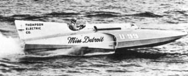

|
The Gold Cup is among the most prestigious of motorsport trophies, in part because it is the oldest continually-awarded trophy in all of motorsports. The first Gold Cup race was held in 1904. In comparison, the first Indianapolis 500 was held in 1911. Hydroplane racing became a tradition in Detroit when designer Christopher Columbus Smith (of Chris Craft fame) built a Detroit-based boat that would crack the 60 miles-per-hour speed barrier, capturing the Gold Cup in 1915. As the speeds grew so did the crowds, and hydroplane racing became a major Detroit event. Through the decades Detroit builders, drivers, fans and sponsors have proven themselves to be among the best.
 This photo is of "Miss Detroit" as raced in 1958. Other boats have carried the same name (including the 1915 winner), this one was owned and driven by Chuck Thompson. More Details For more history about the Gold Cup and Detroit powerboat racing, see:
For more info about the history of Hydroplane Racing, visit The The Hydroplane and Raceboat Museum and Leslie Field's history pages.
All contents Copyright © 1997-2001 Spirit of Detroit THUNDERFEST, except where noted.
Web page created by Brian Reed.
|